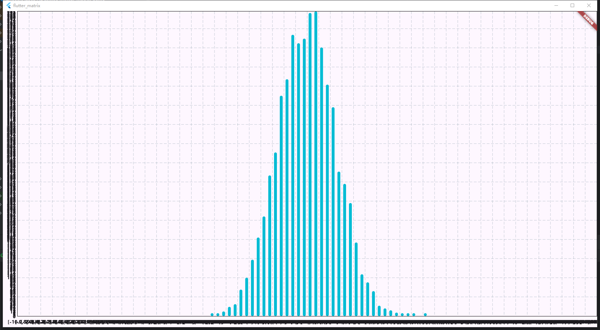

概率论与数理统计
mean
Object mean({int dim = -1})
求均值
test
import 'package:flutter_matrix/matrix_type.dart';
main() {
var mt = Matrix.fromList([
[1, 2, 3, 4],
[double.infinity, 2, 2, 3],
[0, 4, 6, -2]
]);
print(mt.mean(dim: 0));
print(mt.mean(dim: 1));
print(mt.mean(dim: 2));
}
output
[2.5, Infinity, 2.0]
[Infinity, 2.0, 2.75, 1.25]
Infinity
median
Object median({int dim = -1})
求中位数
test
import 'package:flutter_matrix/matrix_type.dart';
main() {
var mt = Matrix.fromList([
[1, 2, 3, 4, 6, 7, 10],
[double.infinity, 2, 2, 3, 4, 7, -65],
[0, 4, 6, -2, 1, -2, -2]
]);
print(mt.median(dim: 0));
print(mt.median(dim: 1));
print(mt.median(dim: 2));
}
output
[4.0, 3.0, 0.0]
[1.0, 2.0, 3.0, 3.0, 4.0, 7.0, -2.0]
3.0
mode
Object mode({int dim = -1})
求众数
test
import 'package:flutter_matrix/matrix_type.dart';
main() {
var mt = Matrix.fromList([
[1, 2, 3, 4, 6, 7, 10],
[double.infinity, 2, 2, 3, 4, 7, -65],
[0, 4, 6, -2, 1, -2, -2],
[double.infinity, 2, 2, 3, 4, 7, -65],
]);
print(mt.mode(dim: 0));
print(mt.mode(dim: 1));
print(mt.mode(dim: 2));
}
output
[1.0, 2.0, -2.0, 2.0]
[Infinity, 2.0, 2.0, 3.0, 4.0, 7.0, -65.0]
2.0
shuffle
void shuffle({int? seed, int dim = -1})
随机打乱，seed是随时数种子
test
import 'package:flutter_matrix/matrix_type.dart';
main() {
data_format = "%2.2f";
Matrix.linspace(start: 0, end: 1, row: 5, column: 10)..visible();
var m12 = Matrix.linspace(start: 0, end: 1, row: 5, column: 10);
var m13 = Matrix.linspace(start: 0, end: 1, row: 5, column: 10);
var m14 = Matrix.linspace(start: 0, end: 1, row: 5, column: 10);
m12..shuffle(dim: 0)..visible();
m13..shuffle(dim: 1)..visible();
m14..shuffle(dim: 10)..visible();
}
output
[
[ 0.00 0.02 0.04 0.06 0.08 0.10 0.12 0.14 0.16 0.18]
[ 0.20 0.22 0.24 0.27 0.29 0.31 0.33 0.35 0.37 0.39]
[ 0.41 0.43 0.45 0.47 0.49 0.51 0.53 0.55 0.57 0.59]
[ 0.61 0.63 0.65 0.67 0.69 0.71 0.73 0.76 0.78 0.80]
[ 0.82 0.84 0.86 0.88 0.90 0.92 0.94 0.96 0.98 1.00]
]
[
[ 0.06 0.18 0.14 0.16 0.02 0.12 0.08 0.04 0.10 0.00]
[ 0.29 0.20 0.39 0.31 0.22 0.35 0.37 0.27 0.24 0.33]
[ 0.41 0.47 0.57 0.49 0.51 0.55 0.43 0.45 0.59 0.53]
[ 0.67 0.73 0.63 0.71 0.61 0.65 0.76 0.80 0.69 0.78]
[ 1.00 0.94 0.98 0.92 0.96 0.88 0.90 0.86 0.84 0.82]
]
[
[ 0.20 0.84 0.04 0.27 0.29 0.92 0.53 0.35 0.98 0.80]
[ 0.82 0.22 0.24 0.06 0.90 0.51 0.94 0.96 0.16 0.18]
[ 0.41 0.02 0.86 0.88 0.49 0.31 0.12 0.76 0.57 0.39]
[ 0.00 0.63 0.45 0.67 0.08 0.10 0.73 0.14 0.78 1.00]
[ 0.61 0.43 0.65 0.47 0.69 0.71 0.33 0.55 0.37 0.59]
]
[
[ 0.55 0.41 0.96 0.27 0.92 0.82 0.57 0.39 0.73 0.63]
[ 0.88 0.29 0.43 0.98 0.22 0.78 0.94 0.45 0.76 0.37]
[ 0.69 0.16 0.84 1.00 0.90 0.71 0.20 0.51 0.53 0.49]
[ 0.08 0.33 0.65 0.31 0.10 0.59 0.18 0.02 0.86 0.67]
[ 0.80 0.04 0.61 0.06 0.35 0.14 0.00 0.47 0.12 0.24]
]
uniform
static Matrix uniform({double lb = 0.0, double ub = 1.0, required int row, required int column, int? seed})
均匀分布
test
import 'package:flutter/material.dart';
import 'package:fl_chart/fl_chart.dart';
import 'flutter_matrix.dart';
void main() {
runApp(const MyApp());
}
class MyApp extends StatelessWidget {
const MyApp({super.key});
// This widget is the root of your application.
@override
Widget build(BuildContext context) {
return MaterialApp(
title: 'Flutter Demo',
theme: ThemeData(
colorScheme: ColorScheme.fromSeed(seedColor: Colors.deepPurple),
useMaterial3: true,
),
home: const MyHomePage(),
);
}
}
class MyHomePage extends StatefulWidget {
const MyHomePage({super.key});
@override
State<MyHomePage> createState() => _MyHomePageState();
}
class _MyHomePageState extends State<MyHomePage> {
// 生成1K个标准均匀分布的数据并且使用柱状图可视化
static Matrix datas = MatrixRandom.uniform(row: 1, column: 1000, seed: 42);
static Map<List<double>, int> maps = datas.toHist(start: 0.0, end: 1.0, counts: 10);
var ls = maps.keys.toList();
FlTitlesData get titlesData => FlTitlesData(
show: true,
bottomTitles: AxisTitles(
sideTitles: SideTitles(
showTitles: true,
reservedSize: 30,
getTitlesWidget: getTitles,
),
),
leftTitles: AxisTitles(
sideTitles: SideTitles(
showTitles: true, // 设置为 true 显示左侧 Y 轴刻度
reservedSize: 40, // 留出空间
interval: 3, // 设置刻度间隔
getTitlesWidget: getLeftTitles, // 自定义左侧刻度标签
),
),
topTitles: const AxisTitles(
sideTitles: SideTitles(showTitles: false),
),
rightTitles: const AxisTitles(
sideTitles: SideTitles(showTitles: false),
),
);
// 自定义 Y 轴刻度标签
Widget getLeftTitles(double value, TitleMeta meta) {
final style = TextStyle(
fontWeight: FontWeight.bold,
fontSize: 14,
);
String text;
if (value % 3 == 0) { // 仅在指定刻度显示标签
text = value.toInt().toString();
} else {
text = '';
}
return SideTitleWidget(
meta: meta,
space: 4,
child: Text(text, style: style),
);
}
Widget getTitles(double value, TitleMeta meta) {
final style = TextStyle(
fontWeight: FontWeight.bold,
fontSize: 14,
);
String text = ls[value.toInt()].toString();
return SideTitleWidget(
meta: meta,
space: 4,
child: Text(text, style: style),
);
}
List<BarChartGroupData> buildGroup(){
return List<BarChartGroupData>.generate(ls.length, (r){
return BarChartGroupData(
x: r,
barRods: [
BarChartRodData(toY: maps.values.elementAt(r).toDouble()),
]
);
});
}
@override
Widget build(BuildContext context) {
return Scaffold(
body: Center(
child: BarChart(
BarChartData(
barGroups: buildGroup(),
titlesData: titlesData,
),
),
),
);
}
}
output

normal
static Matrix normal({double mu = 0.0, double sigma = 1.0, required int row, required int column, int? seed})
正态分布
test
static Matrix datas = MatrixRandom.normal(row: 1, column: 10000, seed: 42);
static Map<List<double>, int> maps = datas.toHist(start: -10.0, end: 10.0, counts: 100);
var ls = maps.keys.toList();
output

shake_total
void shake_total({double bias = 1.0, int? seed})
对整体数据随机上下限抖动最大abs(bias)值
test
import 'package:flutter_matrix/matrix_type.dart';
main() {
var mt = Matrix.fill(number: 2, row: 4, column: 6)..visible();
mt..shake_total(bias: 1, seed: 3)..visible();
}
output
[
[2.00000 2.00000 2.00000 2.00000 2.00000 2.00000]
[2.00000 2.00000 2.00000 2.00000 2.00000 2.00000]
[2.00000 2.00000 2.00000 2.00000 2.00000 2.00000]
[2.00000 2.00000 2.00000 2.00000 2.00000 2.00000]
]
[
[1.84526 1.93082 1.21542 1.07671 2.73399 1.04996]
[2.86985 1.04787 2.03070 2.86932 1.36468 2.91896]
[2.23152 2.47494 2.37738 2.75460 1.98057 2.90156]
[1.61362 1.21451 2.29266 1.64790 2.31230 1.48668]
]
shake_percent
void shake_percent({double bias = 1.0, double percent = 0.5, int? seed})
随机抖动percent占比的数据
test
import 'package:flutter_matrix/matrix_type.dart';
main() {
var mt = Matrix.fill(number: 2, row: 4, column: 6)..visible();
mt..shake_percent(bias: 1, seed: 3, percent: 0.5)..visible();
print(mt.count((x) => x == 2) == 4 * 6 ~/ 2);
}
output
[
[2.00000 2.00000 2.00000 2.00000 2.00000 2.00000]
[2.00000 2.00000 2.00000 2.00000 2.00000 2.00000]
[2.00000 2.00000 2.00000 2.00000 2.00000 2.00000]
[2.00000 2.00000 2.00000 2.00000 2.00000 2.00000]
]
[
[2.00000 2.00000 1.04996 1.04787 2.00000 1.21542]
[1.07671 2.00000 2.00000 2.86932 1.36468 2.03070]
[1.93082 2.86985 2.00000 2.91896 2.00000 2.00000]
[1.84526 2.00000 2.73399 2.00000 2.00000 2.00000]
]
true
shake_probably
void shake_probably({double bias = 1.0, double p = 0.5, int? seed})
按照概率对数据随机抖动
test
import 'package:flutter_matrix/matrix_type.dart';
main() {
var mt = Matrix.fill(number: 2, row: 4, column: 6)..visible();
mt..shake_probably(bias: 1, seed: 3, p: 0.25)..visible();
}
output
[
[2.00000 2.00000 2.00000 2.00000 2.00000 2.00000]
[2.00000 2.00000 2.00000 2.00000 2.00000 2.00000]
[2.00000 2.00000 2.00000 2.00000 2.00000 2.00000]
[2.00000 2.00000 2.00000 2.00000 2.00000 2.00000]
]
[
[2.00000 1.19765 2.00000 1.59960 2.00000 2.00000]
[2.00000 2.00000 2.00000 1.29358 2.16905 2.00000]
[2.00000 2.00000 2.00000 2.00000 2.00000 2.00000]
[2.00000 2.00000 2.00000 2.00000 2.00000 2.00000]
]